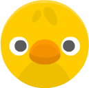

Apretá Espacio si el pollito es del mismo color que el de hace 2 turnos.
Memoria activa
Van a aparecer pollitos de distintos colores, uno por uno.
Apretá Espacio cuando el de ahora sea del mismo color que el de hace N turnos.
Si no, dejá pasar.

El tercero coincide con el primero (hace 2 turnos).